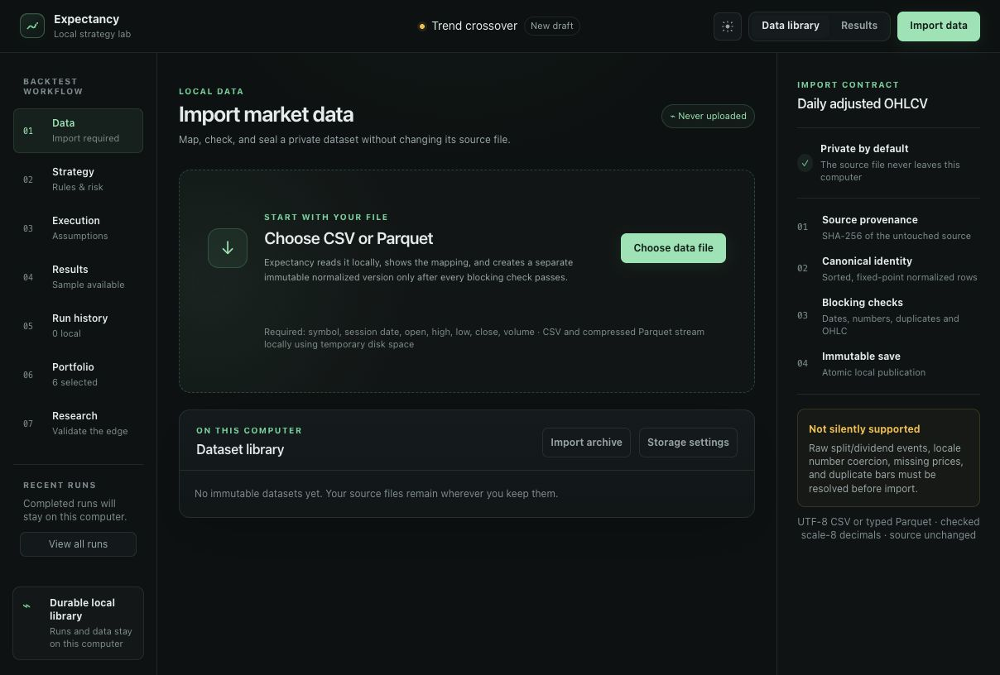
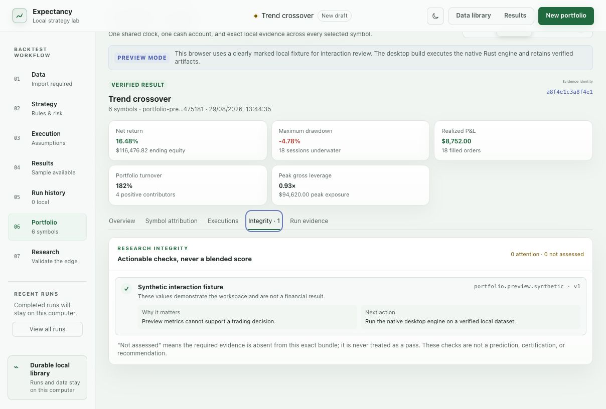

01
Prepare the source data
Expectancy does not include market data. Use data for which you have a lawful right to process and, if relevant, redistribute. Keep the original file unchanged so its source hash remains meaningful.
Required daily-bar fields
- instrument symbol;
- session date;
- open, high, low and close;
- volume.
Prefer an explicit exchange calendar, price basis and adjustment policy. A price file without point-in-time universe membership may contain survivorship bias even when its rows are numerically valid.
02
Import and map the observations

The source remains in place. A separate normalized dataset is produced only after the mapping and blocking checks pass.
Open full-size screenshot ↗- 1Choose CSV or compressed Parquet
Select the source file from the local computer. It is not uploaded by the normal product workflow.
- 2Map the schema
Associate each canonical field with one source column. Confirm date, decimal and time-zone interpretation rather than relying on inference.
- 3Review blocking findings
Resolve invalid dates, non-numeric values, duplicate symbol-session rows, incoherent OHLC ranges and missing required fields.
- 4Publish the local dataset
The catalogue records source provenance, the mapping, validation summary and canonical content identity.
If a transformation is scientifically justified, perform it as a documented preprocessing step and preserve both the original source and transformation receipt.
03
Define the strategy
Visual and Python authoring produce versioned strategy documents that are validated by the Rust engine. The visual editor supports nested Boolean groups, typed comparisons, long and short legs, schedule and eligibility controls, protective exits and custom arithmetic formulas.

Each condition exposes its operands, comparison, grouping policy and warm-up requirement before the strategy is run.
Open full-size screenshot ↗Start with the smallest falsifiable rule
Define the signal before optimizing its parameters. Record the economic or behavioural hypothesis separately from the numerical rule. A strategy specification should make it possible to identify observations that would contradict the hypothesis.
Typed rule graph
Use reviewed indicator operands, nested all/any groups and bounded formulas. The editor prevents incompatible domains and exposes warm-up requirements.
Document-producing worker
Python executes locally with the user’s permissions in a bounded worker and must emit a supported strategy document. Rust performs final validation.
User-authored Python is code. Read it before execution and do not run files obtained from an untrusted source.
04
Declare execution assumptions
Execution inputs are part of the experiment, not interface preferences. Confirm the following before running:
Decision and fill timing
When the signal can observe a value and the earliest event eligible to fill it.
Costs
Commission per fill, spread, slippage, market-impact and short-borrow assumptions.
Liquidity
Volume participation, partial-fill behaviour and stale or unavailable price handling.
Capital
Starting cash, position sizing, concurrent capital use, leverage and margin policy.
Orders
Market, limit, stop or stop-limit trigger and time-in-force behaviour.
Terminal state
End-of-data treatment, delisting assumptions and any forced liquidation rule.
Zero costs and unusually large commission or slippage values generate explicit preflight findings. Each active warning must be reviewed; acknowledgements are retained with the run.
05
Run the simulation
Preflight binds the dataset, strategy, calendar, universe and execution configuration. It estimates working memory and result size before execution. The desktop warns at an estimated 512 MiB working set and blocks estimates above 2 GiB.
- Read every preflight warning and its unit.
- Confirm that strategy warm-up fits within the selected interval.
- Check the selected symbol universe and membership evidence.
- Run and retain the resulting attempt receipt.
- If cancelled or interrupted, treat the attempt as incomplete and start a new run only after diagnosing the cause.
06
Inspect the result rather than one metric

Read equity and drawdown beside exposure, attribution, configuration and the evidence identity. Values shown here are synthetic.
Open full-size screenshot ↗Verify the dataset, strategy, engine and configuration fingerprints.
Inspect equity, drawdown, exposure and sub-period behaviour.
Determine which instruments and periods produced the result.
Review rejected, partial and filled orders plus costs and liquidity.
Select a trade and follow it back to the decision and source row.
Read assessed, attention and not-assessed findings independently.
07
Challenge the result
Do not select a strategy using the same evidence later described as validation. Predeclare the objective, parameter family, candidate count, chronological folds and holdout interval before observing the corresponding result.

Each finding states the evidence, interpretation and next action. Missing evidence remains unassessed rather than becoming a score.
Open full-size screenshot ↗Recommended sequence
- Evaluate sub-period and symbol concentration.
- Apply realistic cost and liquidity stress.
- Inspect a parameter neighbourhood rather than only the optimum.
- Use anchored or rolling chronological validation where appropriate.
- Open a sealed holdout once, after the selection procedure is fixed.
- Report all tested candidates and failures, not only the selected result.
08
Preserve and export
Save completed run evidence and its verification receipt together. When comparing runs, reopen and verify both artifacts before computing metric or trade-path differences. Preserve source-data rights when moving a project between computers.
Review an export before sharing it. Normal logs and support material must not silently include source paths, proprietary data, strategy source, environment secrets or personal information.